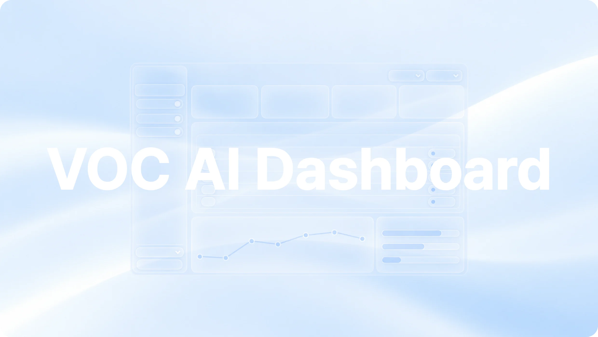
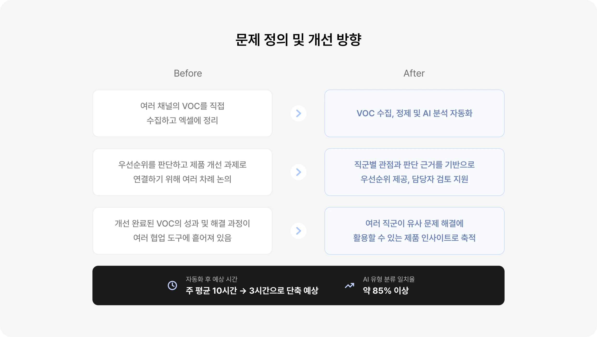
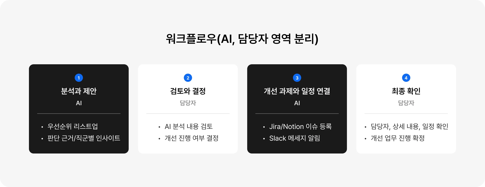

Overview
VOC를 자동 수집·분석하여 제품 개선
우선순위를 제안하고 인사이트 축적하기
운영팀은 여러 채널에 흩어진 VOC를 직접 수집하고 정리하는 데 많은 리소스를 투입하고 있었으며 우선순위와 의사결정을 내리는 과정에서도 관련 직군 간 논의가 반복되면서 핵심 업무에 집중할 시간을 할애하고 있었습니다. 이에 VOC 수집·정제·분석은 AI가 수행하고, 담당자는 AI의 판단 근거와 직군별 인사이트를 바탕으로 의사결정을 내릴 수 있도록 했습니다. 또한 결정된 VOC를 개선 과제와 일정으로 연결하고 이후 해결 과정과 결과를 축적해 유사한 문제에도 활용할 수 있도록 하여 주 평균 10시간이 소요되던 반복 업무를 3시간으로 줄이는 것을 목표로 했습니다.

Background
반복 작업과 의사결정 시간을 줄여 제품 개선에 집중할 수 있는 환경을 만들고자 했어요.
이전 VOC 수집·분석 과정의 문제점을 바탕으로 VOC AI 대시보드의 개선 방향을 설정했습니다.
이를 통해 실제 업무 플로우에 적용된다면 주 평균 10시간의 업무를 약 3시간으로 줄여 반복 업무
시간을 약 70% 절감하고 AI 유형 분류를 약 85% 이상 일치시키는 것을 목표로 했습니다.

Workflow
AI는 반복·분석 업무를, 담당자는 판단과 결정에 집중하도록 했어요.
업무의 반복성과 판단에 필요한 맥락을 기준으로 AI와 담당자의 역할을 나눴습니다. 정보를 분석 ·
제안하고 일정에 연결하는 업무는 AI가 맡고, 고객에게 미치는 영향, 제품 방향, 팀의 리소스를 함께
고려하여 판단하는 업무는 담당자가 맡도록 하여 반복 업무를 줄이고 우선순위와 개선 과제를 최종
결정하도록 설계했습니다.

Solution
직군별 역할과 목적에 따라
필요한 정보와 기능을 설계했어요.
VOC 운영 담당자, 제품 의사결정 담당자, 디자인·개발 검토 참여자의 업무 목적에 따라 필요한
정보와 기능을 구분했습니다. 운영 담당자는 수집·처리 현황을 관리하고, 의사결정 담당자는 판단
근거를 검토해 개선 과제를 선정하며, 검토 참여자는 문제의 맥락과 해결 가능성을 확인하도록
구성했습니다. 공통으로는 과거 유사 사례의 해결 과정과 성과를 탐색해 현재의 판단과 개선 과제에 활용할 수 있도록 설계했습니다.